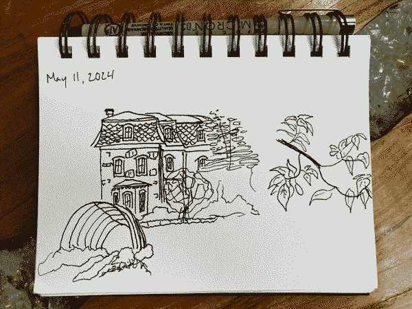

Last updated: Sun May 12 2024 | Permalink | RSS
I have been sketching lately. Mostly sitting in a place and drawing a building or plant within view. Some of these sketches are better than others, but these sketches are mental exercise more than making final pieces. I have been wanting to get back into making more art, whether pixel art like I have on this site already or more algorithmically made works. So sketching in this case is to help me understand what shapes I am seeing and thinking about them and what details to include and not include when trying to render something.
These have been fun to work on and it has been serene just spending 30-60 minutes sitting and just observing the details of one object in the same space as me. An object I might glance at regularly but not really take in beyond a quick glance of "That's pretty" or "Huh, neat". I have been trying to notice regular patterns in texture and struggling to render irregular stone wall textures.
A lot of this process is frustrating and hard, but I keep doing it because it is ultimately very satisfying to see the drawings come together. A large part of that satisfaction comes from the drawings being tangible objects with many flaws and irregularities. I was reading recently about adding more irregularity into our websites. As I mentioned before, rendering irregularity into something you want to be clear and read well is very hard, and something I struggle with personally. All the same, especially with appreciating these textures in the sketches and the subjects I'm sketching, I want to start trying to add these qualities to the sites I build. Especially this site, since ultimately this site is meant to be a reflection of my current work and skills.
A few months back I introduced new fonts to my portfolio site, something I chose for looking more like text hand-written with markers or pens. I would like to add some more hand-drawn qualities to the site, but doing this with CSS alone is tricky as far as I know now. I will try to do some research and see what I can find because I think having a rougher, textured web with some human fingerprints on it will make it more friendly to us, the humans.
In the past years since going from working as a bicycle mechanic and working every day with my hands directly touching the things I was working on to now, where I manipulate abstract, intangible things through a keyboard and mouse, I have found a new desire to make tangible, physical things. The sketches are part of this, but I also want to make some "final works" that can be touched, felt, heard. Some of this desire has gone into my garden and the empty lot behind our house I have been caring for with some neighbors.
Creating and working on tangible things is important to me and my wellbeing, especially as my professional and volunteer work both involve manipulating digital objects. Wrenching, planting, drawing, watering, painting, sculpting, sweeping, and pedaling will all be incredibly important in keeping me happy. One thought that comes up is that my roles at work and at Code for Philly involve building community, connections, understanding, and empathy; none of which are tanglible but all are vital in making our city a tangibly, perceptively better place. Rough edges and all.
Thank you for reading! Please consider supporting this blog.